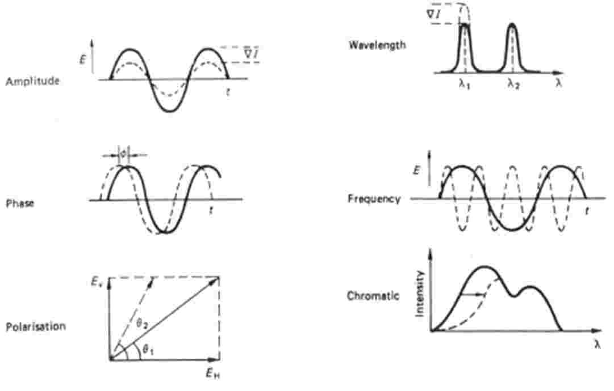
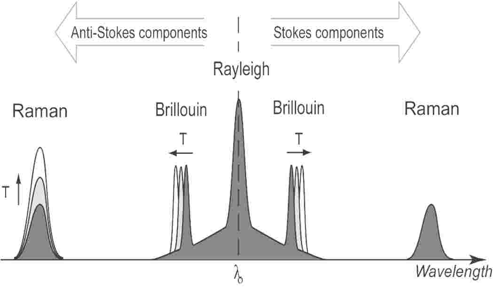
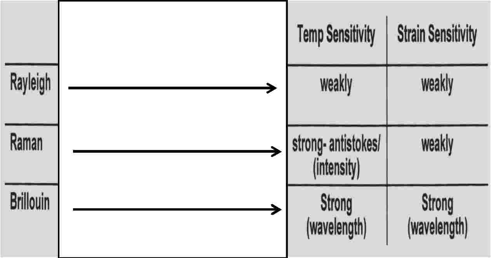
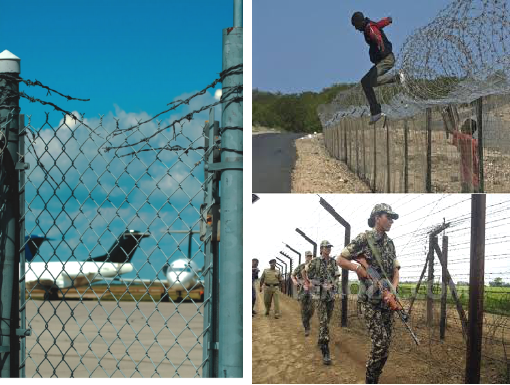
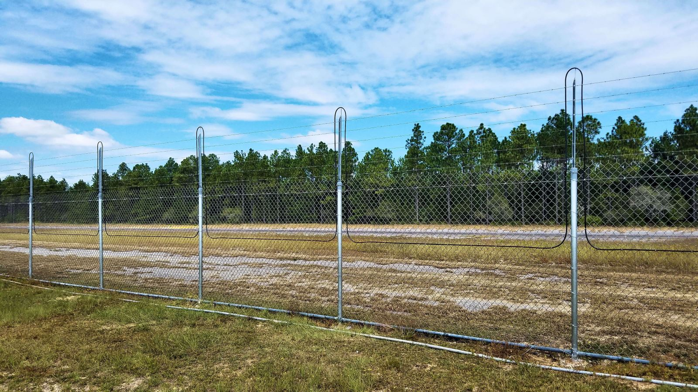
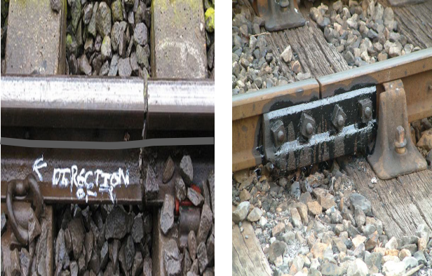
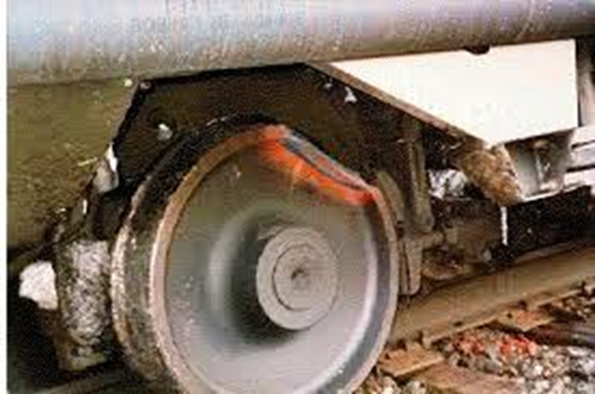
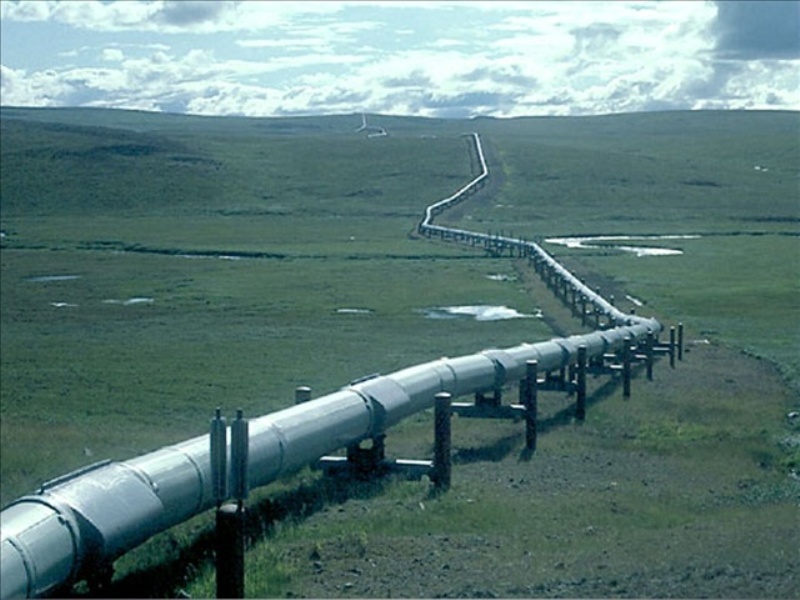
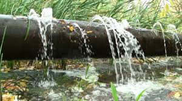
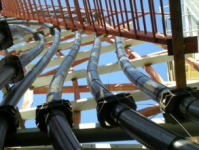

In comparison with the conventional types, fiber optic sensors are used in wide range areas such as physical, chemical, bio-medical, oil and gas applications. Different measurements can be made with high accuracy and optimal reliability such as strain, rotation, displacement, temperature, pressure, velocity, acceleration, electrical and magnetic fields.



Country Borders, Military Bases, Power Plants, Oil Refineries, Government Facilities, Sea Ports, Airports, Jails, Etc, All Need 24 Hr Real Time Monitoring To Stop Intrusion.
The system is able to detect and locate intrusions over a cable distance of up to 40km where the system is installed centrally and both channels are utilised up to their maximum length of 80KM.




Distributed sensor can continuously monitor vibration, strain and temperature on pipe line for the entire length of optical fibre.


